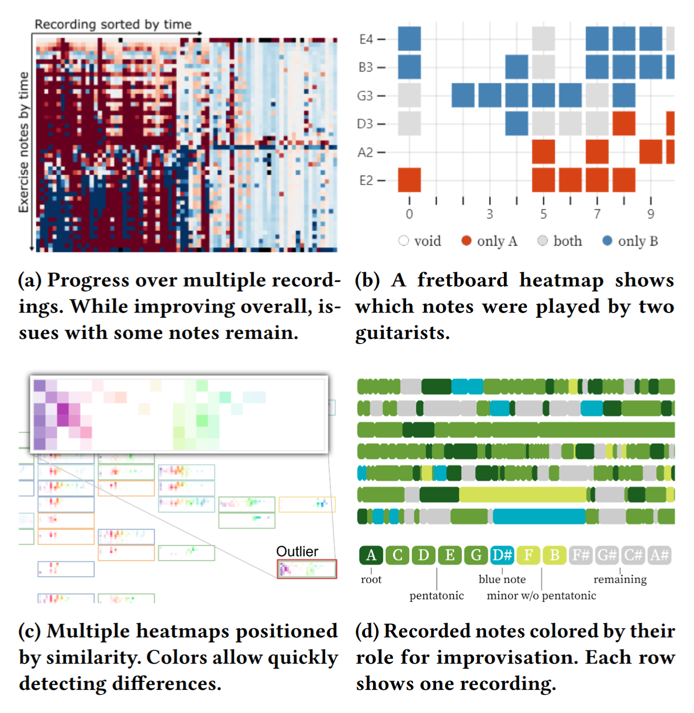

Data-Driven Visual Reflection on Music Instrument Practice

Venue. CHI IMI Workshop (2022) Workshop Paper
Authors. Frank Heyen, Quynh Quang Ngo, Kuno Kurzhals, Michael Sedlmair
Abstract. We propose a data-driven approach to music instrument practice that allows studying patterns and long-term trends through visualization. Inspired by life logging and fitness tracking, we imagine musicians to record their practice sessions over the span of months or years. The resulting data in the form of MIDI or audio recordings can then be analyzed sporadically to track progress and guide decisions. Toward this vision, we started exploring various visualization designs together with a group of nine guitarists, who provided us with data and feedback over the course of three months.
Acknowledgements. Funded by Deutsche Forschungsgemeinschaft (DFG, German Research Foundation) under Germany’s Excellence Strategy - EXC 2075 - 390740016, and by Cyber Valley (InstruData project).